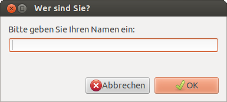
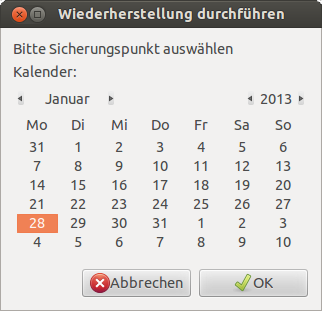

Zenity
Dieser Artikel wurde für die folgenden Ubuntu-Versionen getestet:
Ubuntu 16.04 Xenial Xerus
Ubuntu 14.04 Trusty Tahr
Zum Verständnis dieses Artikels sind folgende Seiten hilfreich:
 Wer Shell-Skripte schreibt und nutzt, möchte Rückmeldungen oder Fragen unter Umständen mit grafischen Elementen kombinieren. Benutzerabfragen in einem eigenen Dialog anzuzeigen wäre da ein erster Schritt. Für GTK-Dialoge gibt es dafür das Programm Zenity
Wer Shell-Skripte schreibt und nutzt, möchte Rückmeldungen oder Fragen unter Umständen mit grafischen Elementen kombinieren. Benutzerabfragen in einem eigenen Dialog anzuzeigen wäre da ein erster Schritt. Für GTK-Dialoge gibt es dafür das Programm Zenity  .
.
Für KDE bzw. Qt-Dialoge gibt es das Programm KDialog mit ähnlicher Funktionalität. Die Abspaltung (Fork) yad bietet dagegen erweiterte Möglichkeiten bei Darstellung und Benutzerinteraktion.
Installation¶
Zuerst muss folgendes Paket installiert [1] werden:
zenity
 mit apturl
mit apturl
Paketliste zum Kopieren:
sudo apt-get install zenity
sudo aptitude install zenity
Beispielskript¶
Anhand eines kleines Skriptes sollen die Möglichkeiten des Programms aufgezeigt werden. Das Beispielskript ist recht simpel aufgebaut: Es soll zuerst eine Warnung zum Programm angezeigt werden, dann wird vom Benutzer eine Texteingabe und eine Passworteingabe gefordert und alles am Ende wieder angezeigt. Die Quellcodezeilen sind nummeriert, um sie später besser erklären zu können.
Allgemeine Informationen¶
Zuvor ein paar allgemeine Informationen zur Shell-Programmierung: In der Regel reicht es in der ersten Zeile die Standardshell unter /bin/sh zu benutzen. Die if-then-Konstrukte werden benutzt, um festzustellen, ob der Benutzer auf "Abbrechen" bzw. "Nein" geklickt hat. Der Befehl "exit" beendet in so einem Fall das Skript. Ein "\n" in einer Textzeile sorgt für einen Zeilenumbruch. Die Variablenzuweisung mit "=" kann später per "$" wieder ausgelesen werden.
Damit die Skripte starten, muss man diese nach dem Speichern ausführbar machen [3].
Quellcode¶
Folgendes Skript gibt man (ohne Zeilennummern) in einem Editor [2] ein und speichert es an einen beliebigen Ort:
1 2 3 4 5 6 7 8 9 10 11 12 13 14 15 16 17 18 19 20 21 22 23 | #!/bin/bash if ! zenity --warning --text "Dieses Programm ist eigentlich harmlos\!\nTrotzdem fortfahren?"; then exit; fi if ! NAME=$(zenity --entry --text "Bitte geben Sie Ihren Namen ein:" --title "Wer sind Sie?"); then exit; fi if ! PASS=$(zenity --entry --hide-text --text "Bitte geben Sie das Passwort ein:" --title "Und das Passwort?"); then exit; fi ( echo "25"; sleep 1 echo "# Statusmeldung 1" echo "50"; sleep 1 echo "# Statusmeldung 2" echo "100" ) | zenity --progress --text "Vorgang wird bearbeitet" --percentage=0 zenity --info --text "Ihr Name: $NAME\nIhr Passwort: $PASS" --title "Das Ergebnis!" |
Erläuterungen¶
Zeile 3: Die Option
--warningzeigt eine Warnung mit den Optionen "Ok" und "Abbrechen" an. Den angezeigten Text kann man immer mit der Option--textbeeinflussen. Bei neueren Versionen bekommt man jedoch nur noch eine Warnung angezeigt. Dort muss die Option--questionfür einen Fragedialog genutzt werden.Zeile 7 - Die Option --entry zeigt ein Texteingabefeld mit den Optionen "Ok" und "Abbrechen" an.
Zeile 11: - Dies zeigt wieder ein Texteingabefeld, die Option
--hide-textverschlüsselt dabei aber die Eingabe durch Sternchen.Zeilen 15-21 - Es wird ein Fortschrittsbalken mit dem Startwert 0% angezeigt, dessen Prozentzahl wird in 25er Schritten hochgezählt und der Anzeigetext "Statusmeldung X" bei jedem Schritt verändert.
Zeile 23 - Am Ende wird per
--infoein Informationsfenster mit den eingegebenen Daten angezeigt.
Weitere Optionen¶
 
| Option | Aktion |
--info | Information |
--warning | Warnung |
--error | Fehler |
--question | Frage |
--notification | Benachrichtungsfeld |
--entry | Texteingabe |
--file-selection | Dateiauswahl |
--list | Listenauswahl |
--progress | Fortschrittsanzeige |
--scale | Schieberegler |
--password | Passwort |
--entry --hide-text | Texteingabe mit verstecktem Text |
--calendar | Kalender |
Dies ist natürlich nur ein Teil von dem, was Zenity kann. Genaueres erfährt man im Terminal per
zenity --help
oder in der Manpage zu Zenity.
Programmumschalter¶
Öfters möchte man mit einem simplen Skript zwei gegenteilige Aktionen ausführen, z.B. ein Programm starten und beenden oder sich ins Internet ein- und wieder auswählen. Eine Lösungsmöglichkeit wären zwei getrennte Skripte, die das erledigen. Aus Platzgründen wäre es aber komfortabler, dies mit einem einzigen Icon (welches sich je nach Status verändert) im Panel zu erreichen.
Hinweis:
Der Befehl zenity --notify erzeugt mit aktuellen Versionen von zenity keine Panel-Icons mehr, sondern Benachrichtigungen, deren Verhalten von der Arbeitsumgebung abhängig ist. Der Programmumschalter funktioniert daher nicht unter allen Desktopumgebungen.
Grundgerüst erstellen¶
Das Skript wird in einem Editor [2] erstellt. Hier fügt man das Grundgerüst ein:
1 2 3 4 5 6 7 8 | #!/bin/bash while(true) do zenity --notification --window-icon=$HOME/.icons/status1.png # Befehl 1 zenity --notification --window-icon=$HOME/.icons/status2.png # Befehl 2 done |
Danach muss das Skript ausführbar gemacht werden [3].
Erklärung¶
Das Skript ist eine Endlosschleife, die zwischen zwei Modi hin- und herschaltet. Zuerst wird zenity aufgerufen und präsentiert im Benachrichtigungsfeld des Panels das Symbol status1.png. Klickt man auf dieses, wird Befehl 1 ausgeführt und sofort wieder zenity gestartet, dieses mal aber mit status2.png als Bild. Klickt man wieder darauf, wird Befehl 2 abgearbeitet und die Schleife fängt von vorne an. Dies stellt einen simplen Umschalter dar.
Befehle einfügen¶
Anstelle der beiden Kommentare muss man die Befehle (es sind natürlich auch mehrere Zeilen möglich) einfügen, die abgearbeitet werden sollen.
Symbole wählen¶
Symbole werden im versteckten Ordner ~/.icons im Homeverzeichnis gespeichert. Die Wahl ist dabei willkürlich und kann nach Belieben geändert werden. Manchmal existiert dieser Ordner bereits, ansonsten legt man ihn neu an.
Sinnvolle Symbole sind z.B. simple rote und grüne Schaltflächen:
Beispiele¶
Internet-Einwahl¶
Eine sehr gute Anwendung findet man, wenn man sich ins Internet einwählen möchte. Nicht jeder Benutzer möchte DSL sofort beim PC-Start laufen lassen, für ISDN-Benutzer kommt dies sowieso nicht in Frage. Voraussetzung ist, dass die Internetverbindung mit pppoeconf eingerichtet wurde und die automatische Einwahl nicht aktiviert ist. Der Provider heißt hier dsl-provider und muss ggf. angepasst werden.
Als Symbole kann man die zwei Netzwerk-Bilder aus Ubuntu nehmen:
Nach dem Speichern beider Bilder im .icons-Ordner lautet das Skript dann:
1 2 3 4 5 6 7 8 | #!/bin/bash while(true) do zenity --notification --window-icon=$HOME/.icons/dsl_stat_off.png pon dsl-provider zenity --notification --window-icon=$HOME/.icons/dsl_stat_on.png poff -a done |
Dieses dann z.B. als dsl-dial.sh speichern, ausführbar machen und im Autostart eintragen.
Zenity als Abfrage für dd-Backup nutzen¶
Mit diesem kleinen Script lassen sich die notwendigen Eingaben für das Erstellen eines Partitonsimage abfragen. Es ist besonders für unerfahrene Benutzer brauchbar, da es nahezu selbsterklärend ist.
1 2 3 4 5 6 7 8 | #!/bin/bash zenity --info --text "Im folgenden Auswahlfenster das zu sichernde Laufwerk auswählen. Der Syntax lautet sdx.x" --title "Quelle" cd / && cd /dev && Quelle=$(zenity --file-selection) zenity --info --text "Jetzt den Ort ausgewählen, wohin das Image gespeichert werden soll" --title "Zielordner" cd / && Ziel=$(zenity --file-selection --directory .) zenity --info --text "Dateiname des Images festlegen. Das Image muss mit der Dateiendung .img (backup.img) gespeichert werden." --title "Imagename festlegen" Dateiname=$(zenity --entry --title "Dateiname" --text "Beispiel: backup-sda1.img") sudo dd if=$Quelle bs=1M of=$Ziel/$Dateiname & ddpid=$! ; while [ "$(ps -a | grep $ddpid)" ]; do sudo kill -SIGUSR1 $ddpid; sleep 5; done |
Nachdem man das Skript auf dem Rechner gespeichert hat, z.B. als backups.sh, muss man es noch ausführbar machen.
Grafische Passwort-Abfrage mit Zenity¶
Zenity bietet eine Möglichkeit, das sudo-Passwort grafisch zu erfragen. Hier wird das Passwort in eine Variable PASSW zwischen gespeichert und per Pipe an sudo übergeben. Im unteren Beispiel wird eine Samba-Freigabe per Skript gemountet. Hierbei ist zu beachten, dass das Passwort für sudo und für dem Samba-Login gleich sein muss.
1 2 3 4 5 | #! /bin/bash PASSW=$(zenity --entry --hide-text --text "Bitte Passwort eingeben:" --title "SMB/CIFS Passwort?") echo -e "$PASSW\n" | sudo -S -s -- mount -t cifs //meinServer/smbQuelle /mnt/smbZiel -o iocharset=utf8 -o user=derUsername -o pass=$PASSW PASSW="" sudo -k |
Fortschrittsanzeige¶
Mit Statussymbol¶
Das Benachrichtigungsfeld kann auch über einen Dateideskriptor angesteuert werden. Damit Zenity auf Eingaben wartet, muss die Option --listen gesetzt werden. Dadurch kann man den Status einer länger dauernden Aktion, z.B. Herunter-/Hochladen von größeren Datenmengen oder das Konvertieren vieler Dateien, fortlaufend aktualisieren.
Quellcode¶
Das Skript wird in einem Editor [2] erstellt. Hier fügt man das Grundgerüst ein:
1 2 3 4 5 6 7 8 9 10 11 12 | #!/bin/bash exec 3> >(zenity --notification --listen) for datei in "$1"/* do echo "tooltip:Aktionen für ${datei} werden durchgeführt" >&3 #Befehle für aktuelle Datei abarbeiten done echo "message:Vorgang abgeschlossen" >&3 exec 3>&- |
Erläuterungen¶
Zeile 2: - Hier wird der Dateideskriptor
3geöffnet und Zenity gestartet. Es kann auch ein anderer Dateideskriptor >=3 verwendet werden.Zeilen 4-8: - Für alle Dateien im Verzeichnis
$1werden die entsprechenden Befehle abgearbeitet. Zeile 7 muss durch die jeweiligen echten Befehle ersetzt werden.Zeile 6: - Der Tooltip für das Symbol wird bei jedem Durchgang aktualisiert
Zeile 10: - unter dem Benachrichtigungssymbol wird eine Sprechblase angezeigt
Zeile 12: - Der Dateideskriptor wird geschlossen und Zenity beendet.
Kommandos¶
Das Benachrichtigungssymbol lässt sich über folgende Kommandos steuern. Das Format ist immer
<Kommando>:<Wert>
| Option | Aktion |
icon | Das anzuzeigende Icon. Als Wert gibt man den Pfad zum jeweiligen Icon an. |
visible | Soll ein Symbol angezeigt werden? Mögliche Werte sind true und false |
tooltip | Text des Tooltips |
message | Eine Sprechblase wird unterhalb des Symbols angezeigt. Der anzuzeigende Text wird als Wert erwartet. |
Mit Fenster¶
Quellcode¶
1 2 3 4 5 6 7 8 9 10 11 12 13 14 15 16 17 18 19 20 21 22 | #!/bin/bash exec 3> >(zenity --progress --title="Sicherung" --percentage=0 --auto-close --width=400) echo "# Ermittle Dateien..." >&3 count=$(find ${1-.} | wc -l) # Anzahl der Dateien IFS=' ' # wegen Dateien mit Leerzeichen i=0 for file in $(find ${1-.}) do i=$(($i+1)); echo $(($i*100/$count)) >&3; if [ -d $file ]; then continue; fi #Verzeichnisse überspringen echo "# Datei '$file' wird gesichert..." >&3; echo "Datei '$file' wird gesichert..."; # hier das einsetzen was mit der Datei gemacht werden soll. done echo Fertig. exec 3>&- |
Erläuterungen¶
Zenity wird geöffnet (Bedeutung der Optionen siehe Manpage)
find ${1-.} | wc -l- Die Anzahl der Dateien für die Fortschrittsanzeige wird ermittelt und das Ergebnis der Variablen$countzugewiesenIn einer Schleife werden alle Dateien verarbeitet (
$IFSbestimmt, an welchen Zeichen eine neue Datei beginnt)$(($i*100/$count))- Errechnung der Prozentzahlecho "# Datei '$file' wird gesichert..." >&3;- Zahlen werden von Zenity als Prozentsatz interpretiert,# Textbestimmt den Anzeigetext
Probleme und Lösungen¶
Bei jedem Aufruf von Zenity erscheint im Terminal eine Warnung
Gtk-Message: GtkDialog mapped without a transient parent. This is discouraged.
Der Eintrag an sich ist harmlos, stört ggf. aber die Übersicht erheblich. Man wird ihn los, indem man im Skript jeden zenity-Aufruf mit einem ans jeweilige Zeilenende gesetztem
2> dev/null
die Meldung ins Nirvana schickt.
Links¶
Bildschirmfotos mit Zenity-Oberfläche - Skriptbeispiel
gxmessage
- Hinweise ohne Interaktionsmöglichkeit ausgeben

- Erstellt mit Inyoka
-
 2004 – 2017 ubuntuusers.de • Einige Rechte vorbehalten
2004 – 2017 ubuntuusers.de • Einige Rechte vorbehalten
Lizenz • Kontakt • Datenschutz • Impressum • Serverstatus -
Serverhousing gespendet von